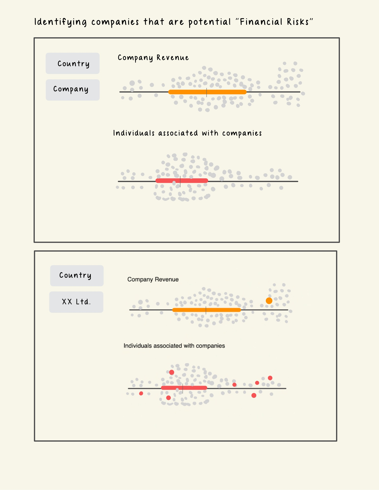
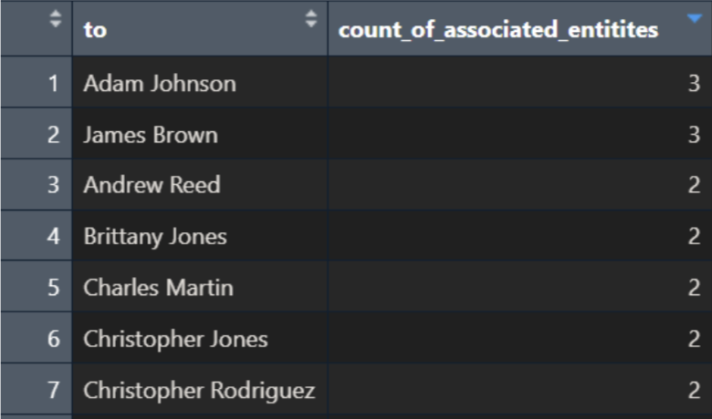
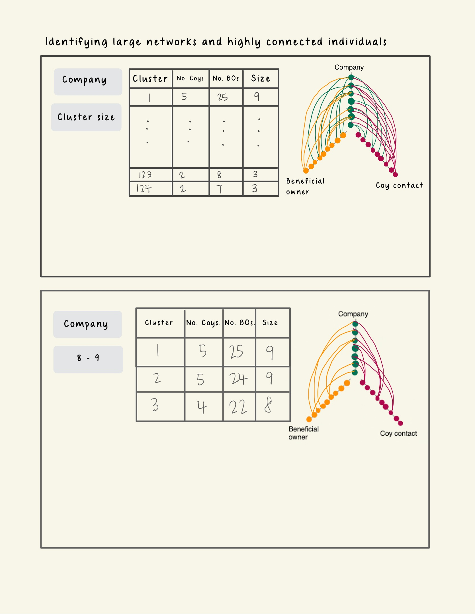
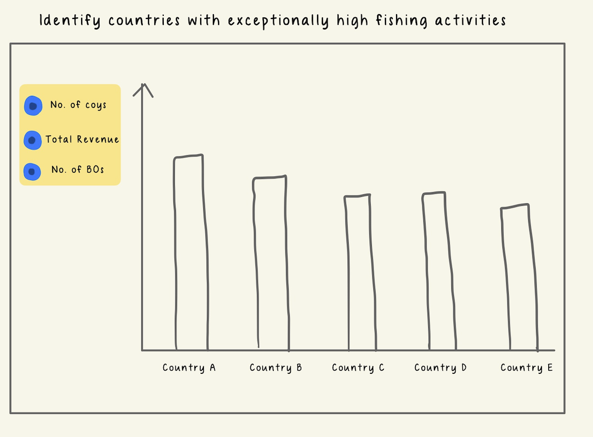
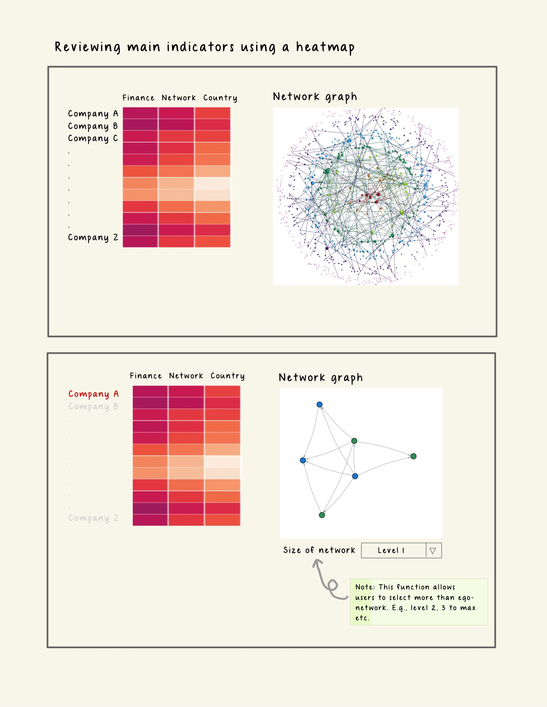
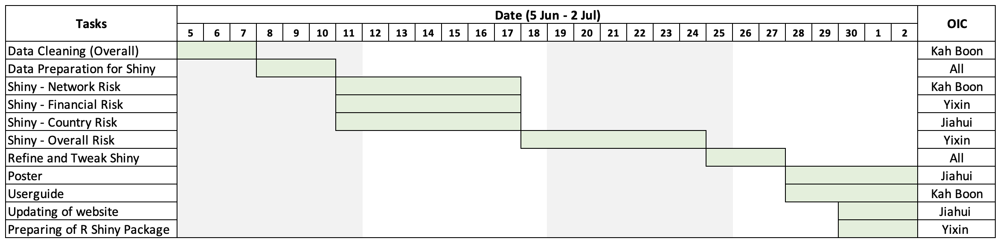

Proposal - Project Hooked
1. Motivation
The team at Fisheye International has taken a big first step collecting large amount of data on the fishing industry. The knowledge graphs provided across the mini-challenges were also useful in providing broad insights to the industry. However, the team believes the data has great potential to go beyond just broad industry trends.
Inspired by Prof Kam and his great enthusiasm for the annual VAST Challenge, team four aims to create an interactive R Shiny App that would allow users the flexibility to quickly identify key business types, toggle between them to dig deep, in order to “hook” onto potential groups who are potentially involved in illegal fishing activities.
2. Scope and Approach
2.1 Scope
After a brief review of the data, a few problems were observed, and the team would do the necessary cleaning subsequently. We would however, like to highlight that for the purpose of our project, we will narrow down the nodes using a two-step process:
- Using the variable product_services, we will identify nodes that are directly associated with the fishing industry.
- With these nodes as an anchor, we will then identify all nodes that share a relationship with the main anchor nodes. These additional nodes could include companies that are not in the fishing industry, but supply various forms of products or services e.g., sale of automobiles, electronics, to the industry. Our analyses, would be based on this extended set of nodes and edges.
2.2 Assumptions and Approach
To address the main objectives of the challenge, our team has broken the task down to 3 main themes to explore:
 |
The Financial Risk Companies or individuals with higher (or lower) than normal revenue and dealing with fishery products are of higher “financial” risks. |
 |
The Network Risk Individuals who are connected to more than 1 company are of higher “network” risk than those who are merely associated with 1 company. This is because transhipments, which are highly associated with IUU, require at least 2 entities to be in cahoots. |
 |
The Country Risk Certain countries, with more fishery companies and individuals residing in them, are of higher country risk as our literature review shows that IUU tends to occur in countries with lesser regulations and enforcement. |
These 3 facets; financial risk, network risk and country of association will serve as the 3 main indicators we will look at to identify potential clusters involved in illegal fishing activities.
3. Prototypes
3.1 Financial Risks
To identify individuals and companies that have higher financial risk, we will use the trusty Boxplot to identify the outliers based on their revenue.
A Boxplot is a graphical representation of the distribution of numerical data that shows the median, quartiles, and extreme values. Users can filter the records to be visualized by entering the Id, selecting the Country or the Category of Products_Services (which the team will device during the data preparation stage). Although, any datapoints that lie beyond 1.5 times of the Interquartile Range (IQR) are regarded as outliers by convention, we will also include a slider in our plot for the user to adjust the 1.5 time threshold for determining outliers. This way, users can customize their analysis and explore different scenarios.
Image 1. Prototype - Financial Risk

We will explore enriching the nodes/entities dataset by creating additional centrality measures to help us discern the roles that they have in the network.
3.2 Network Risks
In this section, we focus on individuals who are associated with more than 1 companies. We can derive these individuals by executing a group-by() function on the `to` column and filtering count greater than 1. Networks with such characteristics would tend also have higher betweenness scores as they are the ‘connectors’ between companies (be it seafood-seafood or seafood-energy companies).
Image 2. Extracted cases of individuals associated with multiple entities

Take the above summarised table as example, the sub-graphs of individuals having relationships with >1 entity will be extracted. The network diameter of each of these sub-graphs will be calculated.
We will provide the users with a data table with the following columns:
- Cluster Number: The name assigned to a sub graph.
- No. of Company: The total number of companies present in cluster
- No. of Business owner: The total number of business owners present in the cluster
- Size: The network diameter of this cluster.
Looking at the prototype below, clicking on each row of the data table will reveal a coordinated hive plot on the right side of the layout. The purpose of this hive plot is for users to explore the patterns for the 2 types of relationship (Company – Beneficial Owner or Company- Company_Contact) in the cluster with high network diameter.
Each axis of the hive plot represents a node type (Company, Business Owner or Company Contact). Each point on the hive plot represents an ID of a business entity. Each line represents a relationship exist between the different entity type. To distinguish the different sub-graphs in each cluster, the lines of each sub-graph will be coloured differently.
Image 3. Prototype - Network Risk

3.3 Country Association
For users to explore countries with high risk, we will use bar charts. For top N countries, users can examine the (1) number of companies registered under them, (2) total revenue and (3) number of beneficiaries owners by clicking on the radio buttons available on the left pane.
Image 4. Prototype - Country Association

3.4 Overall Assessment
Lastly, to visualize the risk levels of the entities based on the three indicators we have discussed, we will create a heatmap that shows the color intensity of each entity according to its risk score. This way, we can easily identify the entities that pose higher risks. Users can filter the records to be displayed on the heatmap by entering the Id, selecting the Country or the Category of Products_Services.
If a user wants to explore a particular entity in more detail after viewing the heatmap, he can click on the id shown for that entity on the heatmap, which will open its interactive ego network for further analysis.
Image 4. Prototype - Overall Assessment

4 Project Timeline and Work Allocation
In order to achieve the above, the team has put together a tentative timeline:
